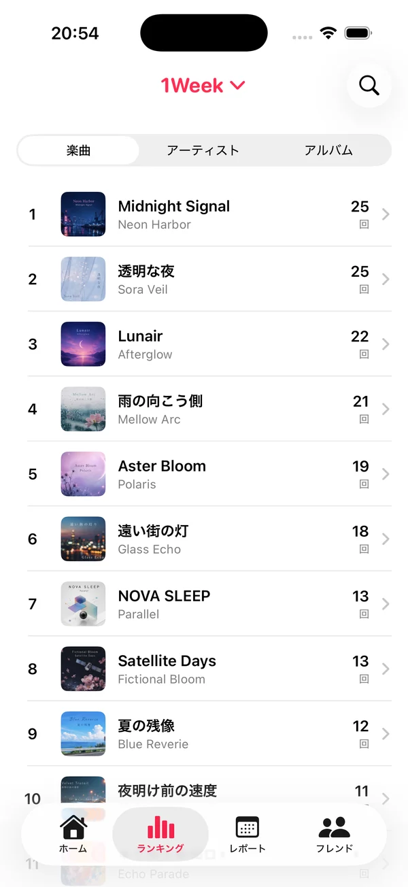
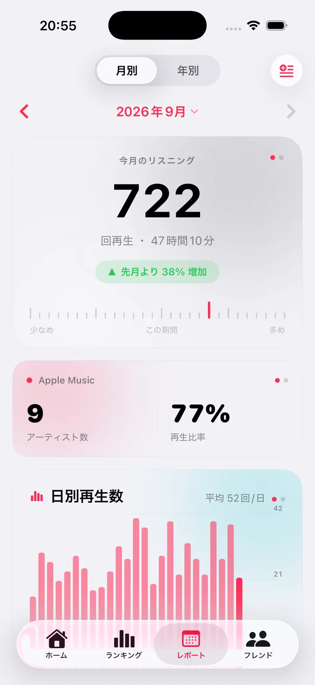
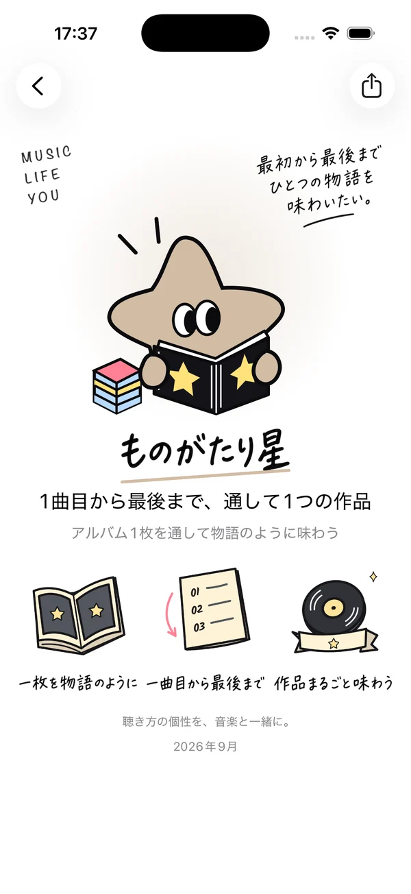
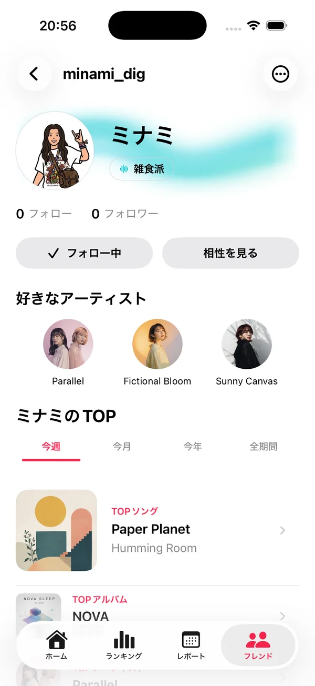
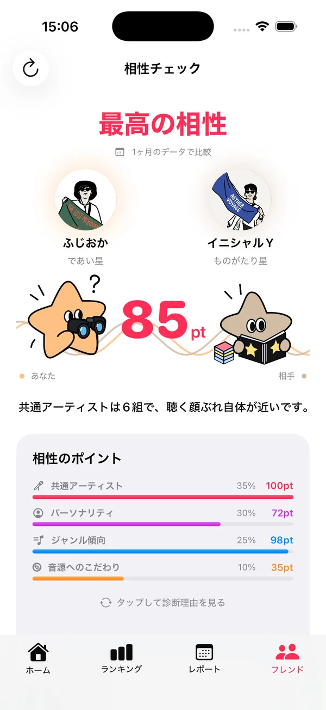
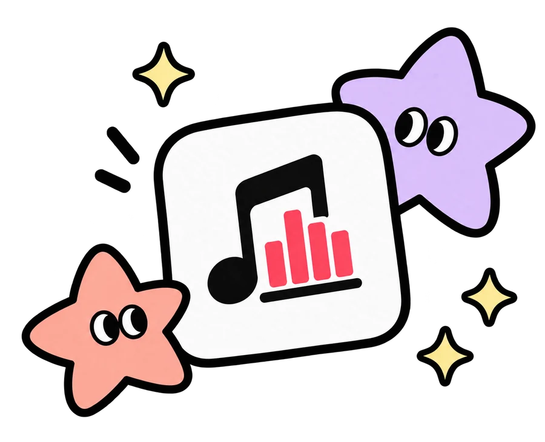

無料プラン
¥0
- ランキング・レポート・分析
- 音楽パーソナリティ
- MuLy IDでのフレンド検索・フォロー
- おすすめユーザー 1日最大3人
- プレイリスト作成 TOP10
Apple Musicで聴いた曲も、CDから取り込んだ曲も。
MuLy（ミューライ）は、あなたの「よく聴く音楽」をひとつの記録にまとめて振り返る、音楽ライフログアプリです。
それでも、好きなアーティストのCDを買い、歌詞カードを開きながら聴く。
PCに取り込み、iPhoneに入れて聴いてきた音楽があります。
けれど、音楽の記録を振り返ると、
そこにCDから取り込んだ曲は残っていませんでした。
サブスクで聴いた曲も、CDから取り込んだ曲も、
自分にとっては同じ「好きな音楽」です。
聴いてきた音楽を、ひとつにして振り返りたい。
そして、その「好き」を誰かと共有したい。
MuLyは、そんな想いから生まれた
個人開発の音楽アプリです。
— MuLy 開発者
あなたの音楽を知る
楽曲・アーティスト・アルバムごとの再生ランキング。あなたの定番が、ひと目でわかります。
月ごと・年ごとの音楽レポート。その月、その年に聴いた回数や時間、よく聴いた作品をふりかえります。
聴く時間帯や曜日、ジャンルなど。いつ、どんな音楽を聴いているのかを分析します。
その月、その年に何度も聴いた曲から、あなたのためのプレイリストを作成。思い出の曲を、いつでも聴き返せます。
SCROLL →

楽曲・アーティスト・アルバムの再生ランキング。1週間・1か月・1年・全期間で切り替えられます。

その月、その年のリスニングをレポートに。先月と比べた変化もひと目で。
よく聴いた曲とアーティストが、アプリを開いた瞬間に並びます。

聴き方から見える、あなたの音楽パーソナリティ。10の星のどれかが、あなたの星。
[ LISTEN & REMEMBER ]
写真は、目で見て思い出す。
音楽は、耳で聴いて思い出す。
数字で「好き」を決めるためではなく、
数字から、あの頃の「好き」を思い出すために。
再生傾向から見える、
あなたの音楽パーソナリティ
聴き方の個性を、10の星のキャラクターで。いまのあなたは、どの星？

好きなアーティストを深く聴く

さまざまなアーティストを幅広く楽しむ

自分の好きなジャンルや音楽を深く楽しむ

ジャンルを越えて幅広い音楽を楽しむ

長く親しまれてきた過去の作品を楽しむ

新しい作品を積極的に楽しむ

同じアルバムのさまざまな曲を楽しむ

アルバムごとに、お気に入りの曲を楽しむ

手元に残した音楽を大切に聴く

サブスクを自由に巡りながら音楽を楽しむ
アーティストへの集中度、ジャンルの広がり、作品のリリース年、
アルバムの聴き方、ライブラリとの付き合い方。
再生の傾向を読み解いて、
あなたの聴き方にいちばん近い星と、
その理由を教えてくれます。
パーソナリティは、
あなたを決めつけるためではなく、
今の自分を少しだけ知るためのもの。
同じ星でも、同じ人はいません。
判定は対象期間の再生履歴にもとづきます。
好きな音楽は、会話のいちばんのきっかけ。誰かの「好き」が、あなたの次の「好き」につながるかもしれません。
共通のアーティストだけでなく、パーソナリティやジャンルなど、聴き方の傾向からも相性を診断。公開範囲は、設定からいつでも切り替えられます。


基本の機能は、無料でも楽しめます。
MuLy Plusは、
MuLyを長く続けていくためのプランです。
¥0
¥300/月
OR ¥2,700 / YEAR
※ 価格は税込です。最新の価格・内容はApp Storeの表示をご確認ください。サブスクリプションは、App Storeのアカウント設定からいつでも変更・解約できます。
はい。サブスクで配信されているかどうかに関係なく、聴いた音楽をまとめて振り返れます。Apple Musicのライブラリ内の楽曲と、CDなどから取り込んだローカル音源の再生回数をもとに集計します。ライブラリに追加していないApple Musicのカタログ曲の再生も、利用状況や端末設定に応じて反映されます。
それで大丈夫です。MuLyのランキングは「好きな曲ランキング」ではなく、その期間によく聴いていた音楽の記録です。「一番好きなのはこの曲じゃないけどな」と思うことも含めて、あなたの音楽だと考えています。
iOS 17.0以降のiPhoneに対応しています。再生履歴の取得には、Apple Musicのライブラリへのアクセス許可が必要です。
Apple Musicの再生履歴の取得や、カタログ再生履歴の反映には、Apple Musicの利用状況や端末の設定により制限があります。ほかの端末での再生や、ライブラリ外の曲の再生は、反映されない場合があります。
はい。設定の「公開設定と共有」から、アカウントの公開設定、ランキングの共有、最近のTOPソングの公開をそれぞれ切り替えられます。特定のユーザーだけにランキングや最近のTOPを見せない設定や、ブロック・ミュートも可能です。
iPhoneの「設定」からApple IDの「サブスクリプション」を開くか、アプリ内の「MuLy Plus → プランと購入の管理」から、App Storeの契約管理画面で変更・解約できます。アカウントを削除しても、サブスクリプションは自動では解約されませんのでご注意ください。
アプリの設定から「アカウントを削除」を選ぶと、アカウントと関連するデータを削除できます。
